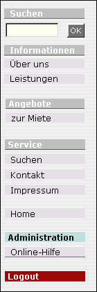
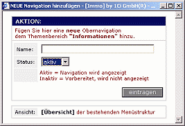
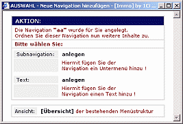
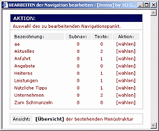
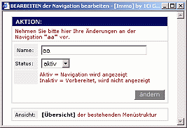
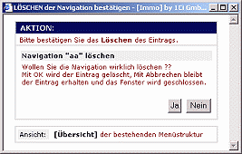
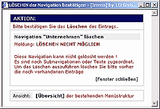

Eigenschaften
der Navigation
|
 Reihenfolge:
Reihenfolge:
Sämtliche
Menüeinträge werden in der Reihenfolge angezeigt, wie Sie diese
anlegen.
Im Gegensatz zur automatischen und alphabetischen Reihenfolge, können
Sie über diesen Weg die Reihenfolge der Einträge selbst bestimmen.
Den einzelnen Menüblöcken sind Überschriften zugeordnet z.B.
<Suche>, <Informationen>, <Angebote>, <Objekte>,
<Service>. Diese Überschriften sind fest verankert, können aber
mit einem Klick auf <Administration> und <Menü -
Überschriften bearbeiten> jederzeit umbenannt werden.
|

|
Anzeige
Mit einem Klick auf
einen Navigationspunkt wird Ihnen der oder die zugeordnete(n) Text(e)
bzw. das Menü neu geladen und zugeordnete Subnavigationen
(Untermenüpunkte) zur Auswahl angezeigt. Der Klick auf die
Subnavigation lädt dann wie gewohnt den oder die zugeordneten Texte.
|
Aufbau der Navigation
Die Navigation (Menü) ist in 3 Bereiche
aufgeteilt.
- Der Informationsbereich -
Überschrift - INFORMATIONEN
Hier stehen Ihnen vielfältige Möglichkeiten für die Präsentation
von Unternehmensinformationen zur Verfügung.
z.B. Über uns, Geschichte, Leistungen, Mitarbeiter, Philosophie,
Anfahrt u.a.m
- Der Angebotsbereiche - Überschrift
- ANGEBOTE
Präsentieren Sie hier Ihre Objektangebote.
- Der Servicebereich - Überschrift -
SERVICE
In diesem Bereich verfügen Sie über Suchmöglichkeiten nach
Informationen und Angeboten, einem dynamischen Kontaktformular für
Anfragen per Email, dem Impressum und insofern Sie sich für die
Administration des Systems angemeldet haben, einen Zugang für den
Aufbau und die Pflege des System.
Für die Bereiche Informationen und
Angebote können Sie neben der Überschrift die Struktur und den Aufbau
vollständig selbst bestimmen. Der Aufbau des Servicebereichs ist
dagegen fest vorgeschrieben. Hier können Sie die Überschrift ändern
und zu den Menüpunkten, Suche, Kontakt und Impressum erweiterte Angaben
und Optionen ausführen.
|
Aktiv / Inaktiv
Eine Navigation oder Subnavigation wird nur angezeigt wenn sie "aktiv" ist und ihr
entweder eine "aktive" Subnavigation mit einem
"aktivem" Text oder ein "aktiver" Text direkt zugeordnet ist.
Diese Funktion des "An- und Ausschalten" bedeutet soviel wie
"sicht- und unsichtbar". Mit dem Wechsel des Status auf
"inaktiv" bleiben Ihnen Menüs oder Texte an der gewohnten
Stelle erhalten. Sie sind für die Öffentlichkeit unsichtbar und
können von Ihnen innerhalb der Administration jederzeit reaktiviert
werden.
|
Löschen
Navigationen oder Subnavigationen können nur gelöscht werden, wenn ihnen
keine weiteren Menüs und/oder Texte zugeordnet sind.
Sollten Sie irrtümlich eine Navigation löschen wollen, wird Ihnen das
System automatisch mitteilen das die gewünschte Aktion aufgrund noch
aktiver Menüs und/oder Texte nicht möglich ist.
|
Tips für den Aufbau
einer Navigationsstruktur:
Geben Sie zunächst in
der gewünschten Reihenfolge nur die Navigationspunkte ein. Verzichten
Sie auf Texteingaben, geben Sie lediglich eine Textüberschrift ein.
Anhand dieser ersten Struktur können Sie schnell beurteilen ob Ihnen
der Aufbau gelungen und die Reihenfolge sinnvoll ist. Falls erforderlich
führen Sie Änderungen direkt durch.
Erst im zweiten Schritt sollten Sie den Navigationen gewünschte
Subnavigationen (Untermenüs) anhängen.
Mit dieser Vorgehensweise entwickelt sich Ihr Menübaum überschaubar.
Sie können jederzeit die Funktionen überprüfen und Stück für Stück
erweitern.
Im letzten Schritt erstellen Sie die Texte bzw. (Objekte/Angebote) und
ordnen diese den Menüpunkten zu. z.B. der Navigation oder einer
Subnavigation.
|
|
Anlegen einer
Navigation / Subnavigation:
|
|
Wählen Sie den Menüpunkt
<Administration> |
|
Wählen Sie den Bereich für den Sie einen Navigationspunkt erstellen
wollen. |
| 
|
Im folgenden Fenster werden Sie zur Eingabe der Menübezeichnung aufgefordert.
Geben Sie hier die Bezeichnung ein.
|
|  |
Nun werden Sie aufgefordert zu wählen, ob Sie
der Navigation eine weitere Subnavigation mit nachfolgendem Text oder der
Navigation direkt einen Text zuordnen wollen.
Wählen Sie <Text anlegen>, geben Sie bitte im folgenden Fenster
Ihre Informationen ein.
Wählen Sie <Subnavigation>, geben Sie bitte im folgenden Fenster den Namen
der Subnavigation ein, quittieren Sie Ihre Eingabe und klicken Sie nun im neuen
Fenster auf <Text anlegen>.
Im neuen Fenster geben Sie nun Ihre Informationen ein.
|
| ACHTUNG: Navigationen und
Subnavigationen werden nur angezeigt wenn aktive Texte zugeordnet wurden. |
|
Ein Übersicht über Ihre bereits angelegten Navigationen
erhalten Sie entweder über <Navigation/Subnavigation
bearbeiten> oder über <Sitemap/Übersicht> |
| Bearbeiten einer
Navigation / Subnavigation: |
|
Wählen Sie den Bereich für den Sie einen Navigationspunkt bearbeiten wollen.
|
|  |
Wählen Sie aus der folgenden Liste den zu bearbeitenden Punkt aus. |
|  |
Führen Sie Ihre Änderungen durch.
Quittieren Sie Ihre Eingabe.
Anschließend wird das Menü automatisch neu geladen und Ihre Änderungen
werden sichtbar.
|
| Löschen einer
Navigation / Subnavigation:
|
|
Wählen Sie den Bereich
aus dem Sie einen Navigationspunkt
löschen wollen.
|
|
Wählen Sie aus der folgenden Liste den zu löschenden Punkt aus.
Löschbar sind nur die Einträge, denen
keine Subnavigationen (0) und Texte (0) zugeordnet sind. |
|  |
Bestätigen Sie den Löschvorgang.
ACHTUNG: Navigationen und Subnavigationen können nur gelöscht
werden, werden ihnen keine Texte oder Menüs zugeordnet sind.
|
|  |
Ein
versehentliches Löschen verhindert das System, indem es Ihnen einen
entsprechenden Hinweis gibt.
Möchten Sie dennoch den
Navigationspunkt löschen, so müssen Sie zuerst sämtliche zugeordneten
Texte entweder freistellen (für den späteren Gebrauch) oder diese
löschen. Gleiches gilt für zugeordnete Subnavigationen. |